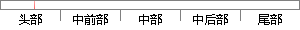

虽然 Code 基于 Electron 框架，但并不是Atom的复刻。
片段位置图

相似结果|
1
原句片段：虽然 Code 基于 Electron 框架，但并不是Atom的复刻。
相似片段 1：虽然 Atom 的初衷可能并非如此,但 Atom 的确做到了...基于Electron 的应用往往会有很大的体积,即使在打包压缩...VS Code 是微软的一款文本编辑器,也可以说是 Atom...
相似片段 2：虽然 Atom 的初衷可能并非如此,但 Atom 的确...基于Electron 的应用往往会有很大的体积,即使在...VS Code 是微软的一款文本编辑器,也可以说是 ...
相似片段 3：atom是基于Electron开发的,在Electron网站上可以看到Visual Studio Code也是基于Electron...开源:Electron 为开源编程框架,由 Github 和 开源社区提供支持和维护。 Electr...
|
※ 片段修改建议 ※
近似词参考：- 虽然：固然 尽管
- 并不是：并非
系统自动生成语句：固然 Code 基于 Electron 框架，但并非Atom的复刻。
注：本片段修改建议为系统自动生成，仅供参考。